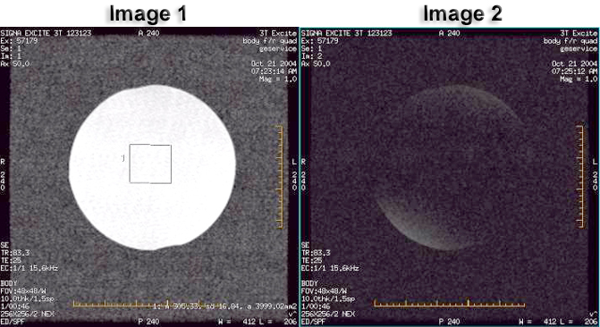

Operating Documentation
Direction 5133330-3, Rev# 14
Signa EXCITE HD 3.0T Service Methods
Module Version 2.0, Version Date 12/3/07
Operating Documentation |
| Required Persons | Preliminary Reqs | Procedure | Finalization |
|---|---|---|---|
| 1 | Not Applicable | 30 mins | Not Applicable |
This section determines the quadrature balance of the quad coil and the phase splitter network. In this test, the Body or Head TLT Sphere phantom is scanned with the quadrature coil connected in two ways. First, an image is taken with the quadrature coil as presently connected. Next, the cables to the quadrature switches are reversed, and the phantom is scanned a second time using the same protocol. The resultant images are analyzed to verify proper quadrature drive function and cable configuration. This procedure consist of the following:
BODY FORWARD/REVERSE QUADRATURE SCANS BODY FORWARD/REVERSE QUADRATURE SCANS.
FORWARD/REVERSE QUADRATURE TEST IMAGE ANALYSIS FORWARD/REVERSE QUADRATURE TEST IMAGE ANALYSIS.
| Last Update | 5/30/2007 |
| Item | Qty | Effectivity | Part# | Manufacturer | |
|---|---|---|---|---|---|
| Body Sphere | 1 | 3.0T EXCITE | 2360025 | - | |
| Body Loader | 1 | 3.0T EXCITE | 2360037 | - | |
| ||||
| POISON HAZARD! | ||||
| 1.5T and 1.0T PHANTOMs CONTAINS NICKEL, A SUSPECT CARCINOGEN. | ||||
| DO NOT INGEST. DISPOSE OF AS A HAZARDOUS WASTE ACCORDING TO STATE AND FEDERAL REGULATIONS. |
| ||||
| POISON HAZARD! | ||||
| 3.0T PHANTOM CONTAINS Silicon Oils. | ||||
| DO NOT INGEST. DISPOSE OF AS A HAZARDOUS WASTE ACCORDING TO STATE AND FEDERAL REGULATIONS. |
| ||||
| Equipment damage possibility. Completely remove the Quad Head Coil from the cradle before performing any body scans. Failure to do so may damage head coil T/R network. | ||||
At the operator work space, prepare the system scan using, Body F/R scan.
At the scanner, remove any surface or head coil from the bore.
Place the Body TLT Sphere Phantom in the SPT Body Loader and place the Body Loader/TLT Phantom in the center of the cradle.
Landmark on the center of the sphere; press LANDMARK, at the keypad on the front of the magnet enclosure, then press ADV TO SCAN.
Select [Save Series].
Select [Manual Prescan]. Enter the recorded center frequency value. Verify that the center frequency peak can be seen at the center of the sceen. Then, select 'Save frequency'.
Select [Auto Prescan].
Select [Scan].
Reverse the blue RF cables connecting to J3 and J4 to the hybrid splitters from the body coil.
| NOTE: | The Hybird Splitter can be found at the left front of the Rear pedestal. |
Without changing the prescan settings, rescan the phantom using the same scan protocol.
Restore the system to the original configuration (i.e., return J3 and J4 to their original connection).
For analysis, see FORWARD/REVERSE QUADRATURE TEST IMAGE ANALYSIS.
This analysis procedure applies to either body or head scans.
Display the first image.
Use a square Region of Interest (ROI) of 4000 mm2 ± 50 mm2, located at the center of the image. Measure the mean pixel value (MPV1). In the viewer, this is shown as m=xxx. Jot down this value. See Illustration 1
Illustration 1: Image Analysis

| NOTE: | In most cases the difference will be easy to see. The Image on the left has the highest mean Value. |
Display the second image.
Use the same square Region of Interest (ROI) of 4000 mm2 ± 50 mm2, located at the center of the image (see note, below). Measure the mean pixel value (MPV2). In the viewer, this is shown as m=xxx. Jot down this value. See Illustration 1
| NOTE: | To use the same ROI box, press <CTRL-C> on the keyboard for the first image. Move the mouse cursor to the second image and click the left button. Finally, press <CTRL-V> on the keyboard. This will copy the ROI to the second image. |
Use the cable configuration which produced the highest mean value from the ROI.
Restore the system to patient scanning conditions.
Do a test scan to ensure the system is running properly.